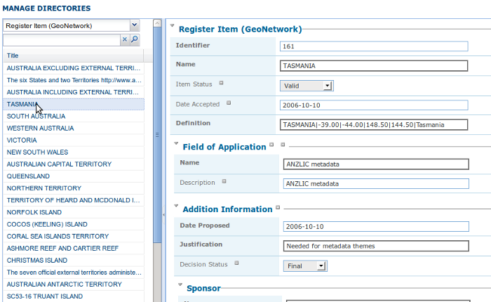

Thesaurus
Introduction
A thesaurus is a list of words (or concepts) from a specialized field of knowledge. In a metadata catalog, words from a thesaurus can be assigned to a metadata record (as keywords) as a way of associating it with one or more concepts from a field of knowledge. For example, a record may be assigned a keyword 'AGRICULTURE - Crops' meaning that the record describes a resource or activity relating to crops in the field of Agriculture.
In GeoNetwork, the process of assigning keywords to a metadata record takes place in the metadata editor. The user can choose words from one or more thesauri to associate the record with the concepts described by those words. This process is supported for both ISO19115/19139 and dublin core metadata records using an extjs based thesaurus picker.
Concepts within a field of knowledge or in different fields of knowledge may be related or even be equivalent. For example, in a thesaurus describing geographic regions, the Australian state of 'Tasmania' is a specialization of the country of Australia. As an example of overlapping concepts in different fields, a thesaurus describing science activities in the field of global change may have concepts relating to agricultural activities that will be equivalent to terms from a thesaurus that describes the themes used in a map series.
In GeoNetwork, thesauri are represented as SKOS (Simple Knowledge Organisation System). SKOS (more on this below) captures concepts and relationships between concepts. SKOS thesauri can be imported from standalone files or they can be generated from ISO19135 register records in the local GeoNetwork catalog. ISO19135 (more on this below) not only captures the concepts and relationships between the concepts, but (amongst other things) how the concepts have evolved and most importantly, who has contributed to and managed the evolution of the concepts and the thesauri itself.
External, Local and Register Thesauri
There are three types of thesaurus in GeoNetwork. The different types are based on where the thesaurus comes from:
- External: A thesaurus managed by an external organisation and imported as a SKOS file. It is flagged to "external" which means that users are not allowed to edit the thesaurus.
- Local: A thesaurus built in the GeoNetwork thesaurus editor and stored as a SKOS file. It is flagged as "local" which means that users are allowed to edit the thesaurus.
- Register: A SKOS thesaurus created from an ISO19135 register record. Users can edit the thesaurus by changing the content of the ISO19135 register record in the GeoNetwork metadata editor and then regenerating the thesaurus. Users cannot edit the thesaurus in thesaurus manager.
ISO19115/19139 Thesaurus Categories
All thesauri in GeoNetwork are categorized using the codelist values for the gmd:MD_KeywordTypeCode element from ISO19115/19139. The categories and their meanings are given below but can also be found in http://www.isotc211.org/2005/resources/gmxCodelist.xml:
| ISO Thesaurus Category | Description |
|---|---|
| place | Thesaurus has concepts identifying a location |
| stratum | Thesaurus has concepts identifying layers of any deposited substance |
| temporal | Thesaurus has concepts identifying a time period |
| theme | Thesaurus has concepts identifying a particular subject or topic |
| discipline | Thesaurus has concepts identifying a branch of instruction or specialized learning |
SKOS format
The Simple Knowledge Organisation Systems (SKOS) http://www.w3.org/2004/02/skos/ is an area of work developing specifications and standards to support the use of knowledge organisation systems (KOS) such as thesauri, classification schemes. This format is used by GeoNetwork to store thesaurus information.
A concept is defined by an identifier, a preferred label, a definition and links with other concepts. Labels and definitions could be stored in multiple languages (using the xml:lang attributes). Three type of links between concepts have been defined in the SKOS format:
- related terms
- broader terms
- narrower terms
For example, a concept "ABLETTE" could be defined as follow with a label in French and English, linked to broader concept:
<skos:Concept rdf:about="http://www.oieau.org/concept#c4fc54576dc00227b82a709287ac3681">
<skos:prefLabel xml:lang="fr">ABLETTE</skos:prefLabel>
<skos:prefLabel xml:lang="en">BLEAK</skos:prefLabel>
<skos:broader rdf:resource="http://www.oieau.org/concept#9f25ece36d04776e09492c66627cccb9"/>
</skos:Concept>
GeoNetwork supports multilingual thesauri (e.g. Agrovoc). Search and editing takes place in the current user interface language (i.e. if the interface is in English, when editing metadata, GeoNetwork will only search for concept in English).
We use SKOS to represent thesauri in GeoNetwork because:
- it provides a simple and compact method of describing concepts and relationships between concepts from a field of knowledge
- SKOS concepts can be queried and managed by the sesame/openRDF software used by GeoNetwork
ISO19135 register format
ISO19135 is an ISO standard that describes procedures for registering an item and the schema for describing a list (or register) of items and the processes by which the items can be created and evolve. This schema is available as a plugin for use in GeoNetwork. To use it, you must download and load the iso19135 plugin schema into GeoNetwork. FIXME: We need a standard way of referring to plugin schemas and a standard place from which they can be downloaded.
A typical ISO19135 register record describes:
- the name and a description of the register
- version and language information
- contact information of those that have a role in the register (eg. manager, contributor, custodian, publisher etc)
- the elements used to describe an item in the register
- the items
The standard information used to describe a register item includes:
- identifier
- name and description of item
- field of application
- lineage and references to related register items
An example of a register item from register of the NASA GCMD (Global Change Master Directory) science keywords is shown below.
<grg:RE_RegisterItem uuid="d1e7">
<grg:itemIdentifier>
<gco:Integer>7</gco:Integer>
</grg:itemIdentifier>
<grg:name>
<gco:CharacterString>Aquaculture</gco:CharacterString>
</grg:name>
<grg:status>
<grg:RE_ItemStatus>valid</grg:RE_ItemStatus>
</grg:status>
<grg:dateAccepted>
<gco:Date>2006</gco:Date>
</grg:dateAccepted>
<grg:definition gco:nilReason="missing"/>
<grg:itemClass xlink:href="#Item_Class"/>
<grg:specificationLineage>
<grg:RE_Reference>
<grg:itemIdentifierAtSource>
<gco:CharacterString>5</gco:CharacterString>
</grg:itemIdentifierAtSource>
<grg:similarity>
<grg:RE_SimilarityToSource codeListValue="generalization"
codeList="http://ww.../lists.xml#RE_SimilarityToSource"/>
</grg:similarity>
</grg:RE_Reference>
</grg:specificationLineage>
</grg:RE_RegisterItem>
As mentioned earlier, to use a thesaurus described by an ISO19135 register record, GeoNetwork uses an XSLT called xml_iso19135ToSKOS.xsl (from the convert subdirectory in the iso19135 plugin schema) to extract the following from the ISO19135 register record:
- valid concepts (grg:itemIdentifier, grg:name, grg:status)
- relationships to other concepts (grg:specificationLineage)
- title, version and other management info
This information is used build a SKOS file. The SKOS file is then available for query and management by the sesame/openRDF software used in GeoNetwork.
Creating or Importing a Thesaurus
External and local thesauri are created or imported using the thesaurus manager. You can use the thesaurus manager by:
- logging in as an administrator
- navigating to the 'Administration' page and clicking on the link "Manage thesauri"
The thesaurus manager page will show a list of thesauri that have been created or imported. The upper part of the page provides the user with functions to edit, add, modify or search a thesaurus. The lower part provides a function to upload an external thesaurus in SKOS format.
Creating a local thesaurus
To create a local thesaurus, click the "+" sign on the category you want your thesaurus to be in. Once created, the thesaurus can be updated through the edit interface. The meaning of each column is as follows:
- Type - This is an identifier assigned to the thesaurus in GeoNetwork. It is composed of the ISO category to which the thesaurus has been assigned (see the codelist for the gmd:MD_KeywordTypeCode element in http://www.isotc211.org/2005/resources/gmxCodelist.xml), whether the thesaurus is a local, external or register thesaurus and the filename of the SKOS file that holds the thesaurus. (Note: the name of the file used to hold a register thesaurus is the uuid of the ISO19135 register record that describes the thesaurus).
- Name - This is the name of the thesaurus which is the administrator on creation or the filename if the thesaurus is ting a thesaurus, the name of the thesaurus will be the filename of the thesaurus.
 Administration interface for thesaurus
Administration interface for thesaurus
For each thesaurus the following buttons are available:
- Download - Link to the SKOS RDF file.
- Delete - Remove thesaurus from the current node.
- View - If type is external, the view button allows to search and view concepts.
- Edit - If type is local, the edit button allows to search, add, remove and view concepts.
Import an external thesaurus
GeoNetwork allows thesaurus import in SKOS format. Once uploaded, an external thesaurus cannot be updated. Select the category, browse for the thesaurus file and click upload. The SKOS file will be in GEONETWORK_DATA_DIR/config/codelist/external/thesauri/<category>.
 Upload interface for thesaurus
Upload interface for thesaurus
At the bottom of the page there are the following buttons:
- Back: Go back to the main administration page.
- Upload: Upload the selected RDF file to the node. Then it will list all thesaurus available on the node.
Creating a register thesaurus
An ISO19135 record in the local GeoNetwork catalog can be turned into a SKOS file and used as a thesaurus in GeoNetwork. ISO19135 records not in the local catalog can be harvested from other catalogs (eg. the catalog of the organisation that manages the register). Once the ISO19135 register record is in the local catalog, the process of turning it into a thesaurus for use in the keywords selector begins a search for the record. Having located the record in the search results, one of the actions on the record is to 'Create/Update Thesaurus'.
 Search results showing ISO19135 record with thesaurus creation action
Search results showing ISO19135 record with thesaurus creation action
After selecting this action, you can choose the ISO thesaurus category appropriate for this thesaurus:
 Selecting the ISO thesaurus category when creating a thesaurus
Selecting the ISO thesaurus category when creating a thesaurus
After selecting the ISO thesaurus category, the ISO19135 register record is converted to a SKOS file and installed as a thesaurus ready for use in the metadata editor. As described above in the section on ISO19135, only the valid register items are included in the thesaurus. This behaviour and any of the mappings between ISO19135 register items and the SKOS thesaurus file can be changed or inspected by looking at the XSLT xml_iso19135TOSKOS.xsl in the convert subdirectory of the iso19135 schema plugin.
Editing/browsing a local or external thesaurus: add/remove/browse keywords
From the thesaurus administration interface, click on the edit button for a local thesaurus or the view button for an external thesaurus. This interface allows:
- keywords search
- add/remove keywords for local thesaurus.
Use the textbox and the type of search in order to search for keywords.
 Browse interface for thesaurus
Browse interface for thesaurus
 Keyword description
Keyword description
Editing a register thesaurus
A register thesaurus is created from an ISO19135 metadata record as described above, so a register thesaurus is updated by editing the ISO19135 metadata record and then regenerating the register thesaurus. The ISO19135 metadata record can be created and edited in the GeoNetwork editor.
Preparing to edit an ISO19135 register record
Register records can be very large. For example, a register record describing the ANZLIC Geographic Extent Names register has approx 1800 register items. Each register item holds not only the name of the geographic extent, but also its geographic extent and details of the lineage, relationships to other terms and potentially, the evolution of the extent (changes to name, geographic extent) including the details of changes and why those changes occurred. Editing such a large record in the GeoNetwork editor can cause performance problems for both the browser and the server because the editor constructs an HTML form describing the entire record. Fortunately a much more scaleable approach exists which is based on extracting the register items from the ISO19135 register record and storing them as subtemplates (essentially small metadata records with just the content of the register item). The process for extracting register items from an ISO19135 register record is as follows:
- search for and select the register record
- choose 'Extract register items' from the 'Actions on selected set' menu
 Extracting subtemplates from a register record
Extracting subtemplates from a register record
- After the register items have been extracted, you should see a results summary like the following.

- The figure for 'Subtemplates extracted' is the number of register items extracted from the ISO19135 register record.
Editing a register item
To edit/change any of the register items that have been extracted as subtemplates, you can use the Directory management interface. This interface is accessed from the 'Administration' menu, under 'Manage Directories'. In this interface:
- select 'Register Item (GeoNetwork)' as the type of subtemplate to edit as follows.
 Managing a Directory of subtemplates, selecting 'Register Item' subtemplates
Managing a Directory of subtemplates, selecting 'Register Item' subtemplates
- enter a search term or just select the search option to return the first 50 register items.
- register items will appear in the left hand side bar, selecting on one will open an editing interface in the right hand panel.
 Managing a Directory of subtemplates, opening a Register Item for editing
Editing global register information
To edit/change any of the global register information (eg. register owner, manager, version, languages), edit the register record in the normal GeoNetwork metadata editing interface.
Metadata editing: adding keywords
When editing an ISO metadata record, a keyword (or concept) picker can be used which allows the editor to:
- do searches for keywords in one or more thesauri in the catalog (search results are displayed on the left).
- select one or more keywords and add them to the selected items list (using arrows or drag & drop) on the right.
- add the selected keywords directly into metadata, grouping keywords by thesaurus.
The editor can also control how many keywords from searches are displayed in the keyword picker (default is 50).
 Keyword selection interface (editing mode)
Keyword selection interface (editing mode)
 Keywords in Metadata Record (editing mode)
Keywords in Metadata Record (editing mode)
 Keywords in Metadata Record (view mode)
Keywords in Metadata Record (view mode)
Notice that a URL pointing to the source thesaurus is included in the Thesaurus Name citation (the actual element used for this is gmd:otherCitationDetails/gmx:FileName). The thesaurus can be downloaded as a SKOS file if it is a local or external thesaurus. For register thesauri the URL refers to the ISO19135 register record from which the thesaurus was created.
Search criteria: keywords
You can search on keywords in the advanced search interface. To help select a keyword you can click in the keyword search field to bring up a list of all the keywords that have been used in the metadata records in this catalog. These keywords are indexed by Lucene on creation/update of metadata. Each keyword in the list has the number of records that use the keyword displayed next to it.
 Thesaurus search interface
Thesaurus search interface
 Auto-complete function in thesaurus search interface
Auto-complete function in thesaurus search interface
If an XML element named keyword-select-panel is present as a child of the search element in the config-gui.xml file (in the WEB-INF directory), then search for keyword using the keyword selection panel is available as in the metadata editor:
<search>
<!-- Display or not keyword selection panel in advanced search panel
<keyword-selection-panel/>
-->
</search>